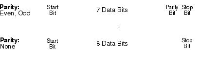

RS-232 Data Frame Format
A character frame consists of all the transmitted bits that make up a single character. The frame is defined as the bits from the start bit to the stop bit, inclusively. Within the frame, you can select the baud rate, number of data bits, and parity type. The function generator uses the following frame formats for seven and eight data bits.
